Del dato a la distribución: el caso de una plataforma de domicilios
Institución Universitaria Pascual Bravo
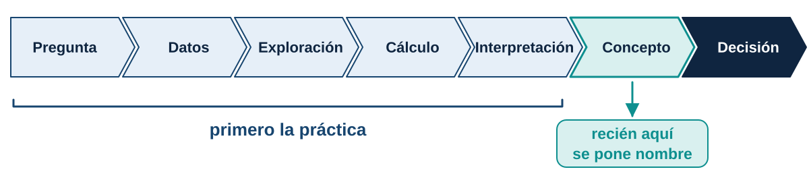
Primero la práctica. El nombre del concepto llega cuando ya lo necesitamos.
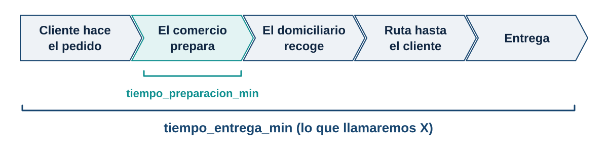
La plataforma registró 600 pedidos durante varias semanas, en distintas zonas, horarios y condiciones de clima.
La gerencia quiere publicar: “Entregamos su pedido en máximo 45 minutos.”
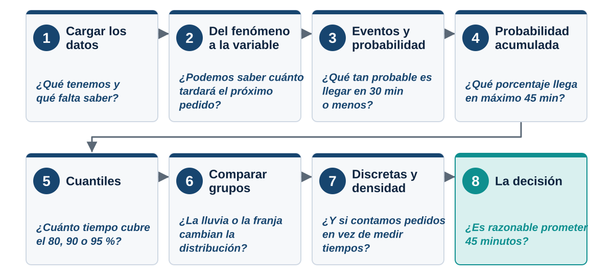
Acto 1
¿Qué tenemos y qué nos falta saber?
Tres bibliotecas: pandas para la tabla, numpy para el cálculo y matplotlib para dibujar.
Un estilo común para todas las gráficas de la sesión:
plt.rcParams.update({
"figure.figsize": (10, 4.6),
"axes.spines.top": False,
"axes.spines.right": False,
"axes.grid": True,
"grid.alpha": 0.25,
"axes.titlesize": 15,
"axes.titleweight": "bold",
"axes.labelsize": 13,
"font.size": 12,
"axes.prop_cycle": plt.cycler(
color=["#2f7bb8", "#0e8f8f", "#b7791f", "#a32d22"]
),
})¿Qué creen que representa cada fila?
Un pedido observado.
¿Qué columna usaríamos para evaluar la promesa de entrega?
tiempo_entrega_min, o retrasado_45min.
¿Qué columnas podrían explicar las diferencias en el tiempo?
Distancia, lluvia, preparación, franja, zona, tipo de pedido.
¿Qué columna guarda la incertidumbre de un pedido futuro?
tiempo_entrega_min: es lo que aún no sabemos.
El archivo pedidos_estadistica_analitica.csv se descarga desde la página de la unidad y se guarda junto al cuaderno.
| pedido_ |
fecha | dia_ |
hora_ |
franja | zona | tipo_ |
distancia_ |
lluvia | tiempo_ |
tiempo_ |
retrasado_ |
incidencia | satisfaccion | |
|---|---|---|---|---|---|---|---|---|---|---|---|---|---|---|
| 0 | P0001 | 2026-08-25 | Martes | 09:30 | Manana | Occidente | Comida | 5.87 | Si | 14.4 | 51.0 | Si | Ninguna | 4 |
| 1 | P0002 | 2026-08-21 | Viernes | 17:30 | Tarde | Occidente | Comida | 8.43 | No | 15.5 | 47.9 | Si | Ninguna | 4 |
| 2 | P0003 | 2026-09-09 | Miercoles | 14:45 | Almuerzo | Sur | Comida | 6.32 | No | 23.8 | 46.4 | Si | Ninguna | 4 |
| 3 | P0004 | 2026-08-05 | Miercoles | 12:55 | Almuerzo | Norte | Mercado | 5.26 | No | 23.2 | 44.9 | No | Ninguna | 4 |
| 4 | P0005 | 2026-08-17 | Lunes | 11:40 | Manana | Centro | Comida | 2.51 | Si | 18.0 | 49.2 | Si | Ninguna | 4 |
Contrasten con lo que respondieron: ¿coincide con lo que ven en la tabla?
(600, 14)¿Qué significa que la tabla tenga filas y columnas?
600 filas: 600 pedidos observados. 14 columnas: 14 características de cada pedido.
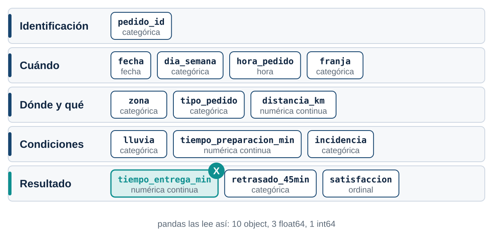
<class 'pandas.core.frame.DataFrame'>
RangeIndex: 600 entries, 0 to 599
Data columns (total 14 columns):
# Column Non-Null Count Dtype
--- ------ -------------- -----
0 pedido_id 600 non-null object
1 fecha 600 non-null object
2 dia_semana 600 non-null object
3 hora_pedido 600 non-null object
4 franja 600 non-null object
5 zona 600 non-null object
6 tipo_pedido 600 non-null object
7 distancia_km 600 non-null float64
8 lluvia 600 non-null object
9 tiempo_preparacion_min 600 non-null float64
10 tiempo_entrega_min 600 non-null float64
11 retrasado_45min 600 non-null object
12 incidencia 600 non-null object
13 satisfaccion 600 non-null int64
dtypes: float64(3), int64(1), object(10)
memory usage: 65.8+ KBLe damos un nombre corto a la columna que vamos a estudiar:
0 51.0
1 47.9
2 46.4
3 44.9
4 49.2
5 57.5
6 34.1
7 32.5
8 63.7
9 71.9
10 34.9
11 52.7
12 33.8
13 67.4
14 47.1
Name: tiempo_entrega_min, dtype: float64count 600.000000
mean 44.223333
std 11.594048
min 12.000000
25% 36.300000
50% 43.600000
75% 51.250000
max 88.400000
Name: tiempo_entrega_min, dtype: float64¿Qué dicen juntas la media y la mediana?
Están muy cerca (44.2 y 43.6): la distribución es casi simétrica, con una cola hacia tiempos altos (máximo 88.4).
Acto 2
¿Podemos saber cuánto tardará el próximo pedido?
Si entra un pedido en este momento, ¿sabemos exactamente cuánto va a tardar?
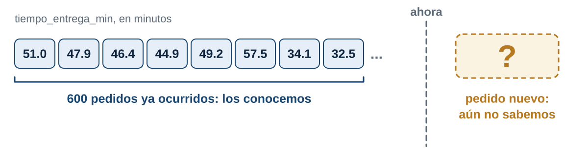
No. Conocemos la historia, pero no el resultado individual del próximo pedido.
¿El tiempo está determinado antes de que ocurra?
No: depende de muchos factores que aún no se han dado.
¿Podemos repetir el proceso?
Sí: cada pedido nuevo repite el mismo proceso en condiciones parecidas.
¿Todos los pedidos tardan lo mismo?
No: los tiempos van de 12.0 a 88.4 minutos.
¿Qué produce esa variabilidad?
Distancia, lluvia, preparación, franja, tráfico, incidencias.
Definición
Proceso que puede repetirse en condiciones similares, pero cuyo resultado específico no se conoce antes de observarlo.
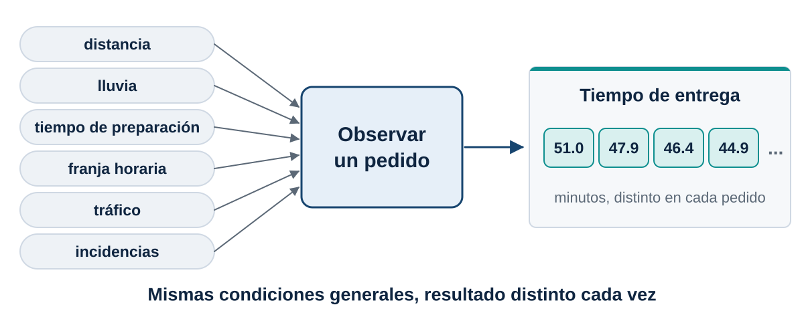
En nuestro caso: observar un pedido y registrar su tiempo total de entrega.
Antes de medir algo, ¿qué es lo que puede pasar?
Un dado
\(\Omega=\{1,2,3,4,5,6\}\)
Un pedido
El resultado completo es toda la fila: zona, distancia, lluvia, preparación, tráfico, incidencias y tiempo final.
Espacio muestral
Conjunto \(\Omega\) de todos los resultados posibles del experimento.
¿Cómo convertimos cada pedido en un valor numérico que podamos analizar?
No siempre necesitamos el resultado completo. Elegimos una característica numérica:
\(X\) = tiempo total de entrega de un pedido
Definición
Función que asigna un número real a cada resultado del espacio muestral:
\[X:\Omega\rightarrow\mathbb{R}\]
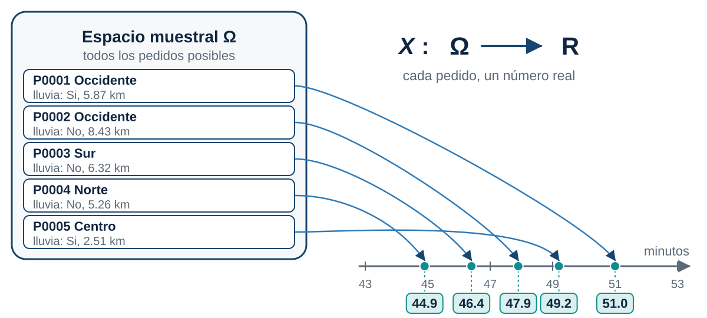
Es aleatoria porque su valor depende de un resultado incierto.
0 51.0
1 47.9
2 46.4
3 44.9
4 49.2
Name: tiempo_entrega_min, dtype: float64Notación
\(X\) es la variable. Los valores \(x_1=51.0,\; x_2=47.9,\; x_3=46.4,\dots\) son realizaciones observadas.
¿tiempo es la variable aleatoria?
No. Son 600 realizaciones de \(X\): los datos que ya ocurrieron.
Valores distintos de tiempo: 324
Valores distintos de satisfacción: 4
[2, 3, 4, 5]¿Podría el tiempo de entrega valer 20.263 minutos?
Sí. Depende de la precisión con que se mida.
Definición
Discreta: toma valores separados, se cuenta.
Continua: toma cualquier valor de un intervalo, se mide.
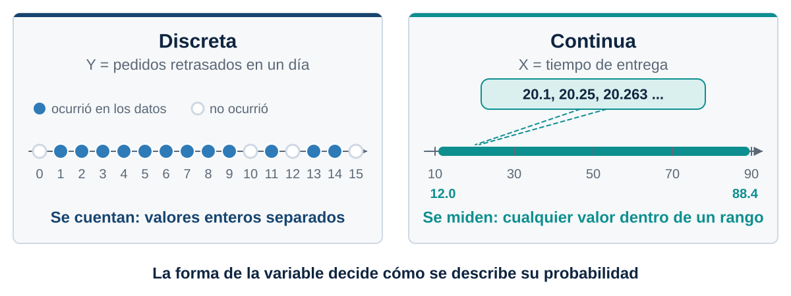
\(X\) (tiempo de entrega) es continua. \(Y\) (pedidos retrasados en un día) es discreta.
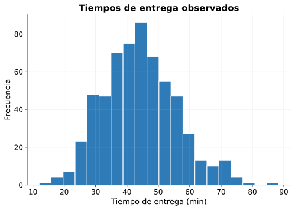
¿Todos los tiempos son igualmente frecuentes?
No: unos valores aparecen mucho más que otros.
¿Dónde se concentra la mayoría?
Entre 35 y 55 minutos.
¿Hay pedidos muy lentos?
Sí: una cola hacia la derecha.
¿Una frecuencia es una probabilidad?
Todavía no. Falta dividir entre el total.
Idea
Los valores de una variable no aparecen todos con la misma frecuencia. La forma en que se reparten es su distribución.
El histograma es una foto de la distribución de \(X\) en nuestros 600 pedidos.
Acto 3
¿Qué tan probable es que un pedido llegue en 30 minutos o menos?
La empresa considera satisfactoria una entrega en máximo 30 minutos. Python responde True o False para cada pedido. Después miramos los que sí cumplen:
[False, False, False, False, False, False, False, False, False, False]
[23.9, 27.8, 22.1, 25.8, 28.0]66
600
0.11¿Por qué la media de una serie de True y False es una proporción?
Python cuenta True como 1 y False como 0: promediar es dividir los casos favorables entre el total.
Definición
Conjunto de resultados del espacio muestral que cumplen una condición.
\[A=\{X\le 30\}\]
Cada True de la serie A es un pedido que pertenece al evento.
La condición se escribe en Python con un operador de comparación.
P(X <= 30) = 0.110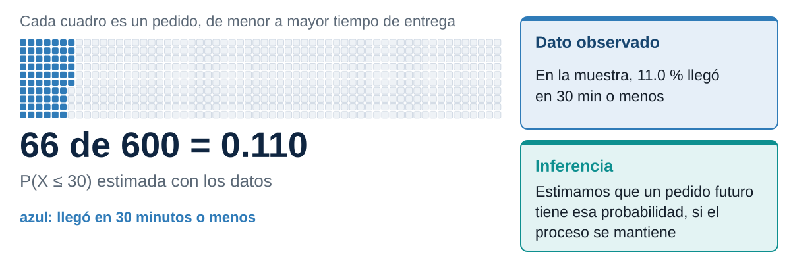
Definición
\[\hat P(A)=\frac{\text{casos favorables}}{\text{casos totales}}\]
Dato observado: en la muestra, el 11.0 % de los pedidos llegó en 30 minutos o menos.
Inferencia: si estos pedidos representan el proceso, esa proporción estima la probabilidad de que un pedido futuro tarde máximo 30 minutos.
Tres preguntas, tres eventos:
P(X <= 45) = 0.548
P(X > 60) = 0.088
P(30 < X <= 45) = 0.438¿Qué significa & en la tercera línea?
Que se cumplan las dos condiciones a la vez.
¿Por qué necesitamos dos condiciones?
Porque el evento es un intervalo: tiene un límite inferior y uno superior.
¿Importa la diferencia entre \(30<X<45\) y \(30\le X\le 45\)?
En una variable continua, casi nada: los valores exactos en un punto tienen probabilidad cero.
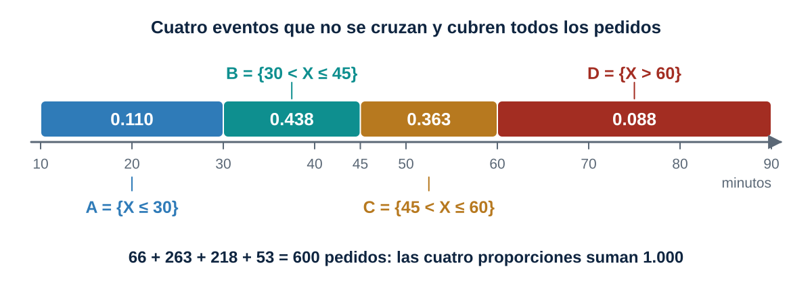
0.548 + 0.452 = 1.000Regla
\(A^c=\{X>45\}\) es el complemento de \(A=\{X\le 45\}\):
\[P(A^c)=1-P(A)\]
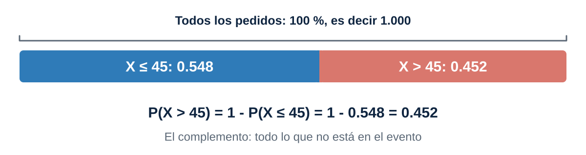
Con lo que ya sabemos, calcula:
P(X <= 35) = 0.218
P(X > 55) = 0.167Acto 4
¿Qué porcentaje de pedidos llega en máximo 45 minutos… o en cualquier otro límite?
¿Qué probabilidad hay de que el pedido llegue antes de distintos límites de tiempo?
P(X <= 20) = 0.008
P(X <= 25) = 0.028
P(X <= 30) = 0.110
P(X <= 35) = 0.218
P(X <= 40) = 0.368
P(X <= 45) = 0.548
P(X <= 50) = 0.710
P(X <= 55) = 0.833
P(X <= 60) = 0.912
P(X <= 70) = 0.970 x P(X<=x)
0 20 0.008
1 25 0.028
2 30 0.110
3 35 0.218
4 40 0.368
5 45 0.548
6 50 0.710
7 55 0.833
8 60 0.912
9 70 0.970¿Por qué las probabilidades nunca bajan al aumentar \(x\)?
Cada evento \(\{X\le x\}\) contiene al anterior.
¿Qué pasa con \(x\) extremadamente pequeño?
La probabilidad se acerca a 0.
¿Y con \(x\) extremadamente grande?
Se acerca a 1.
¿Qué tiene \(\{X\le 40\}\) que no tenga \(\{X\le 30\}\)?
Los pedidos entre 30 y 40 minutos.
¿Qué estamos acumulando?
La probabilidad de todos los valores hasta \(x\).
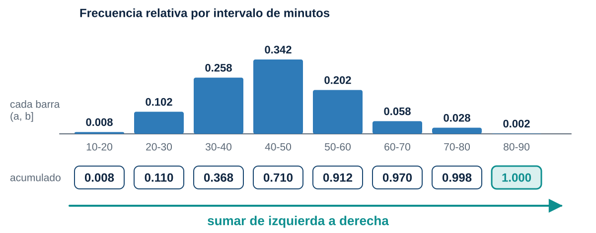
Definición
\[\boxed{F_X(x)=P(X\le x)}\]
A cada valor \(x\) le asigna la probabilidad acumulada hasta ese punto.
En los datos: \(F_X(40)\approx 0.368\). El 36.8 % de los pedidos tarda 40 minutos o menos.
Sigla en inglés: CDF, cumulative distribution function.
Ordenamos los tiempos y a cada uno le asignamos su lugar dividido entre \(n\):
x F(x)
0 12.0 0.001667
1 16.4 0.003333
2 16.8 0.005000
3 17.3 0.006667
4 18.1 0.008333
5 21.3 0.010000
6 22.0 0.011667
7 22.0 0.013333
8 22.1 0.015000
9 22.1 0.016667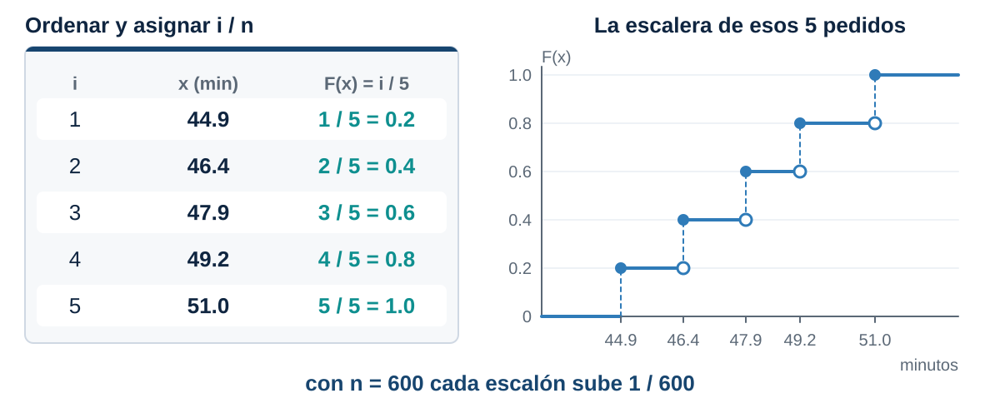
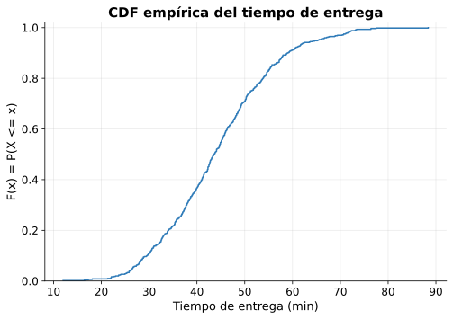
¿Dónde crece más rápido la curva?
Entre 35 y 55 minutos: ahí se concentran los pedidos.
¿Qué indica una zona casi horizontal?
Casi no hay pedidos con esos tiempos.
¿Por qué nunca baja?
Solo acumula: nunca resta probabilidad.
¿Por qué termina cerca de 1?
Al final ya están todos los pedidos.
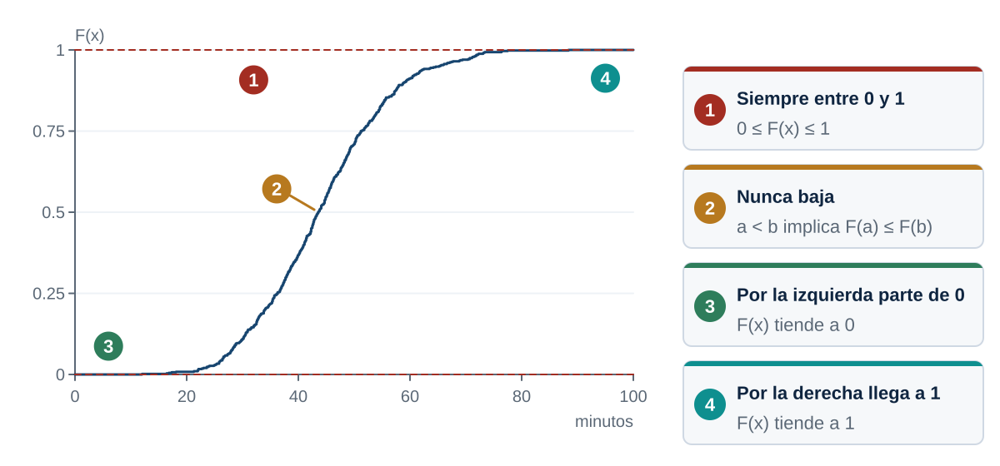
¿Cómo obtenemos \(P(30<X\le 45)\) solo con la CDF?
Directa: 0.438
F(45) - F(30): 0.438Regla
\[P(a<X\le b)=F(b)-F(a)\]
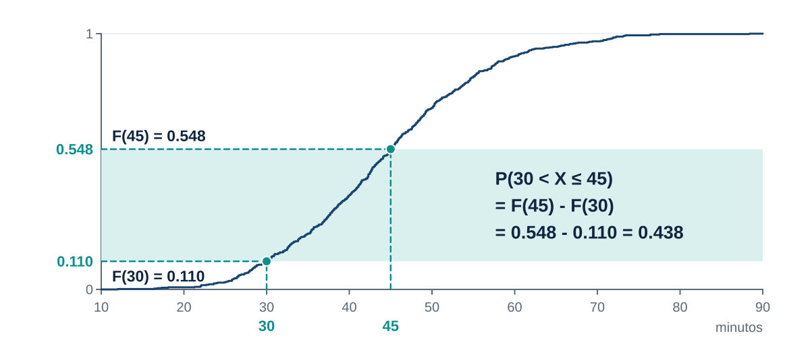
Con la CDF, calcula:
\(P(35<X\le 50)\)
P(35 < X <= 50) = 0.492Lo que hicimos varias veces se convierte en dos funciones:
F(45) = 0.548¿Por qué ordenamos los datos en ecdf?
Para que el lugar de cada valor sea su porcentaje acumulado.
¿Por qué dividimos entre len(x)?
Para que el acumulado sea una proporción entre 0 y 1.
¿Por qué el último valor de F es 1?
Porque el último dato ya tiene a todos los demás por debajo.
Fórmula
\[\hat F_n(x)=\frac{1}{n}\sum_{i=1}^{n} I(X_i\le x)\]
Para cada observación se pregunta \(X_i\le x\): si sí vale 1, si no vale 0. Después se promedia.
Es exactamente lo que hace, en una línea:
Acto 5
¿Cuánto tiempo necesito para cubrir el 80, el 90 o el 95 % de los pedidos?
Hasta ahora Si tengo 40 minutos, ¿qué porcentaje ya llegó?
Ahora Si quiero cubrir el 90 %, ¿cuántos minutos necesito?
Conocemos la probabilidad y buscamos el valor de \(x\).
Cubrir el 50% de los pedidos: 43.6 min
Cubrir el 80% de los pedidos: 53.8 min
Cubrir el 90% de los pedidos: 58.9 min
Cubrir el 95% de los pedidos: 65.2 min¿Cómo se lee el resultado del 90 %?
Aproximadamente el 90 % de los pedidos observados tarda 58.9 minutos o menos.
Definición
El cuantil \(q_p\) es el valor que deja una proporción \(p\) de las observaciones por debajo:
\[F(q_p)\approx p\]
El percentil 90 es el cuantil \(q_{0.90}\). La mediana es \(q_{0.50}\).
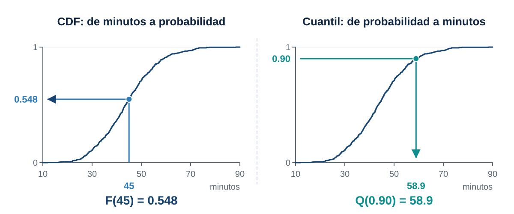
CDF
\(x\rightarrow F(x)\)
De minutos a probabilidad.
Cuantil
\(p\rightarrow Q(p)\)
De probabilidad a minutos.
\[Q(p)\approx F^{-1}(p)\]
Esta conexión es fundamental en analítica: la promesa de un servicio es un cuantil.
Encuentra el percentil 75 y el percentil 90 del tiempo de entrega.
0.75 51.25
0.90 58.92
Name: tiempo_entrega_min, dtype: float64Acto 6
¿La lluvia o la franja horaria cambian la distribución del tiempo?
count mean std min 25% 50% 75% max
lluvia
No 430.0 41.9 11.1 12.0 34.0 41.2 48.7 76.4
Si 170.0 50.0 10.8 22.0 43.2 49.0 56.6 88.4¿Qué diferencia salta a la vista?
Con lluvia la media y la mediana suben alrededor de 8 minutos.
lluvia
No 0.628
Si 0.347
Name: tiempo_entrega_min, dtype: float64Adelanto
Calcular \(P(X\le 45)\) dentro de un grupo es una probabilidad condicional: \(P(X\le 45\mid \text{lluvia})\). En el Tema 2 la formalizamos.
plt.figure(figsize=(8, 5.2))
for condicion, grupo in df.groupby("lluvia"):
x_g, F_g = ecdf(grupo["tiempo_entrega_min"])
plt.step(x_g, F_g, where="post", label=condicion)
plt.xlabel("Tiempo de entrega (min)")
plt.ylabel("Probabilidad acumulada")
plt.title("CDF empírica según lluvia")
plt.legend(title="Lluvia")
plt.show()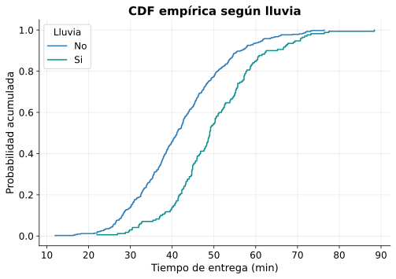
¿Coinciden las curvas?
No: la de lluvia está más a la derecha.
En 45 minutos, ¿qué grupo lleva más probabilidad acumulada?
Sin lluvia: 0.628 contra 0.347.
Si una curva está desplazada a la derecha, ¿qué significa?
Sus tiempos son mayores para la misma probabilidad.
¿Podemos afirmar que la lluvia produce los retrasos?
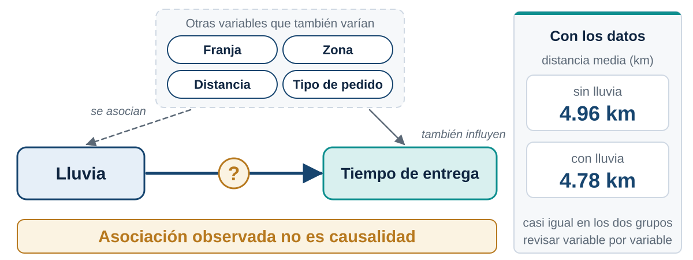
No solo con esta gráfica. Vemos una asociación; la causalidad exige revisar otros factores.
distancia_km tiempo_preparacion_min
lluvia
No 4.96 14.59
Si 4.78 14.41¿La lluvia trae pedidos más lejanos o con más preparación?
No: las medias son casi iguales. Esa parte de la diferencia no viene de la distancia ni de la preparación.
count mean std min 25% 50% 75% max
franja
Almuerzo 192.0 44.9 11.7 18.1 36.7 44.2 52.5 88.4
Manana 121.0 40.0 12.5 12.0 30.2 38.0 48.9 76.4
Noche 173.0 46.5 10.3 23.6 39.5 46.0 53.9 72.2
Tarde 114.0 44.1 11.2 16.8 36.9 42.8 50.3 73.2plt.figure(figsize=(8, 5.2))
for franja in ["Manana", "Almuerzo", "Tarde", "Noche"]:
grupo = df[df["franja"] == franja]
x_g, F_g = ecdf(grupo["tiempo_entrega_min"])
plt.step(x_g, F_g, where="post", label=franja)
plt.xlabel("Tiempo de entrega (min)")
plt.ylabel("Probabilidad acumulada")
plt.title("CDF empírica por franja horaria")
plt.legend()
plt.show()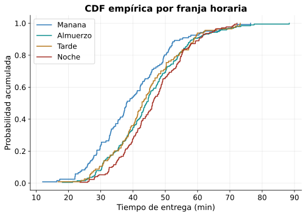
¿Qué franja tiene las entregas más rápidas?
La mañana.
¿Qué franja tiene las más lentas?
La noche.
¿Debería aplicarse una sola promesa a todas?
Depende de cuánto cambien sus percentiles.
P(X<=45) percentil 90
franja
Almuerzo 0.552 58.63
Manana 0.661 54.50
Noche 0.451 60.48
Tarde 0.570 58.87¿Qué información adicional necesitaríamos antes de decidir?
Cuántos pedidos hay en cada franja, si el clima se reparte parejo entre ellas y cuánto cuesta cada mejora.
Acto 7
¿Y si en vez de medir tiempos contamos pedidos?
Definimos retraso como \(X>45\) y contamos cuántos hubo cada día:
fecha retraso
0 2026-08-03 6
1 2026-08-04 13
2 2026-08-05 5
3 2026-08-06 5
4 2026-08-07 8\(Y\) = número de pedidos retrasados en un día
retraso
1 0.041
2 0.041
3 0.122
4 0.163
5 0.245
6 0.061
7 0.122
8 0.122
9 0.020
11 0.020
13 0.020
14 0.020
Name: proportion, dtype: float641.0Definición
Para una variable discreta:
\[p_X(x)=P(X=x)\]
con \(p_X(x)\ge 0\) y \(\sum_x p_X(x)=1\).
La altura de cada barra sí es una probabilidad.
Sigla en inglés: PMF, probability mass function.
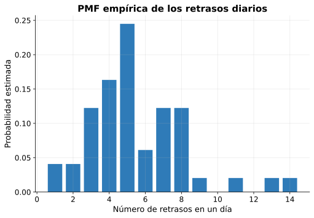
¿Cuál es el número de retrasos más frecuente?
Cinco, con cerca del 24 % de los días.
¿Qué probabilidad hay de exactamente 3 retrasos?
Cerca del 12 %.
¿Qué diferencia hay entre \(P(Y=3)\) y \(P(Y\le 3)\)?
La primera es un solo valor; la segunda acumula los valores hasta 3.
retraso
1 0.041
2 0.082
3 0.204
4 0.367
5 0.612
6 0.673
7 0.796
8 0.918
9 0.939
11 0.959
13 0.980
14 1.000
Name: proportion, dtype: float64Idea
\(F_Y(3)=P(Y=0)+P(Y=1)+P(Y=2)+P(Y=3)\). Aquí se ve por qué se llama acumulada.
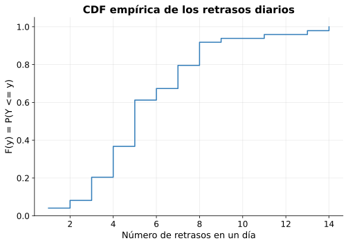
¿De qué tamaño es cada salto?
Igual a la probabilidad de ese valor en la PMF.
¿Dónde está la mediana?
En el primer valor donde la curva llega o pasa 0.5.
Si no podemos contar valores aislados, ¿dónde queda la probabilidad?
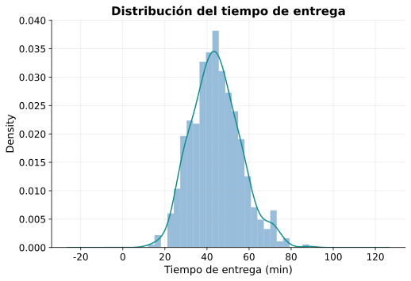
¿Dónde hay mayor densidad?
Alrededor de 40 a 50 minutos.
¿La altura de la curva es una probabilidad?
No.
¿Dónde está la probabilidad?
En el área bajo la curva sobre un intervalo.
Área bajo la curva entre 30 y 40: 0.257
Proporción observada entre 30 y 40: 0.258Las dos cifras casi coinciden.
malla = np.linspace(tiempo.min(), tiempo.max(), 300)
densidad = kde(malla)
plt.figure(figsize=(8, 5.2))
plt.plot(malla, densidad)
plt.fill_between(malla, densidad, where=(malla >= 30) & (malla <= 40), alpha=0.4)
plt.xlabel("Tiempo de entrega (min)")
plt.ylabel("Densidad")
plt.title("P(30 < X <= 40) como área")
plt.show()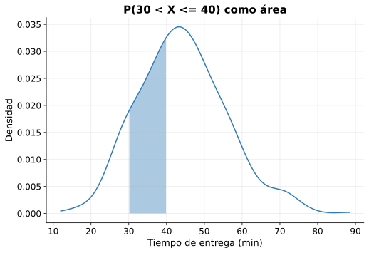
Densidad
Para una variable continua:
\[P(a<X<b)=\int_a^b f(x)\,dx\]
Además \(P(X=x)=0\) para cualquier valor puntual.
Sigla en inglés: PDF, probability density function.
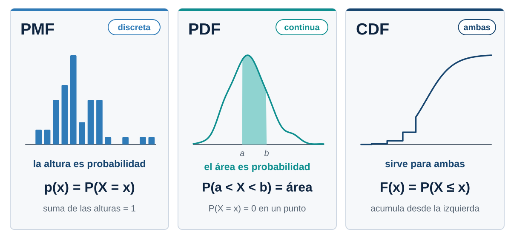
Acto 8
¿Es razonable prometer entrega en máximo 45 minutos?
Cumplimiento global: 0.548franja Almuerzo Manana Noche Tarde
lluvia
No 0.607 0.763 0.525 0.653
Si 0.404 0.250 0.291 0.410Promesa de 45 min: cumple 54.8%
Promesa de 50 min: cumple 71.0%
Promesa de 55 min: cumple 83.3%
Promesa de 60 min: cumple 91.2%
Promesa de 65 min: cumple 94.8%¿Qué promesa se acerca al 90 %?
60 minutos cubre el 91.2 %. El cuantil lo confirma: \(q_{0.90}=58.9\).
¿El 54.8 % es suficiente para convertirlo en una promesa?
Casi la mitad de los clientes recibiría un pedido tardío.
¿La conclusión cambia con lluvia?
Sí: 34.7 % con lluvia contra 62.8 % sin lluvia.
¿Cambia según la franja?
Sí: de 45.1 % por la noche a 66.1 % por la mañana.
¿Estamos describiendo datos históricos o garantizando resultados futuros?
Describimos el pasado. Una probabilidad estimada no es una certeza.
Límites del análisis: 600 pedidos, siete semanas y comparaciones descriptivas. No demuestran causalidad.
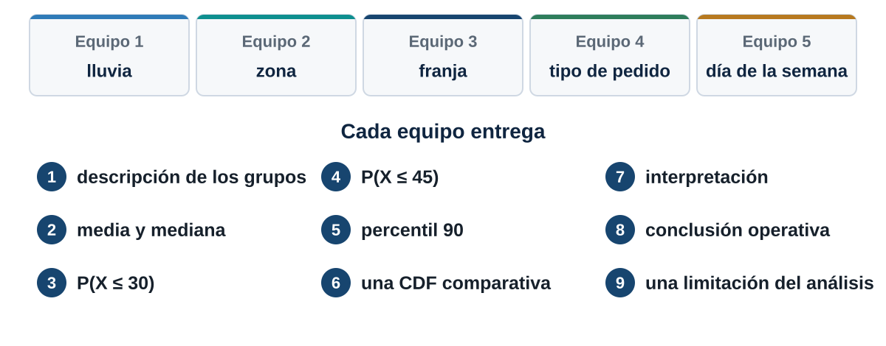
count mean median
zona
Centro 128 37.9 37.4
Norte 100 46.8 44.8
Occidente 118 42.8 42.6
Oriente 115 45.3 45.5
Sur 139 48.6 48.6Cambien zona por la dimensión de su equipo y sigan las nueve entregas.
“La variable aleatoria son los datos.”
Los datos son realizaciones observadas de la variable.
“Probabilidad y frecuencia son lo mismo.”
La frecuencia observada estima la probabilidad bajo ciertos supuestos.
“La CDF da la probabilidad de exactamente \(x\).”
Es acumulada: \(F(x)=P(X\le x)\).
“La altura de una PDF es la probabilidad.”
La probabilidad es el área bajo la curva.
“Llueve y tarda más, así que la lluvia es la causa.”
Es una asociación. La causalidad pide un análisis más riguroso.
“¿Qué probabilidad hay de que esta variable no supere cierto valor?”
Es una probabilidad acumulada: se estudia con la CDF, \(F(x)=P(X\le x)\).
“¿Qué valor necesitamos para cubrir al 90 % de los casos?”
Es un cuantil de la misma distribución.